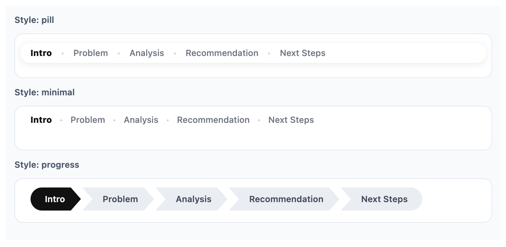
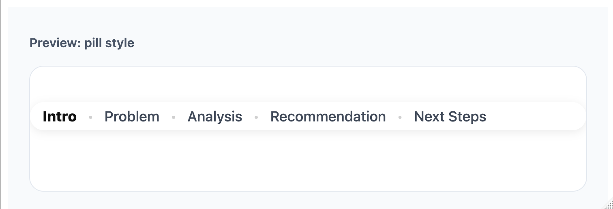
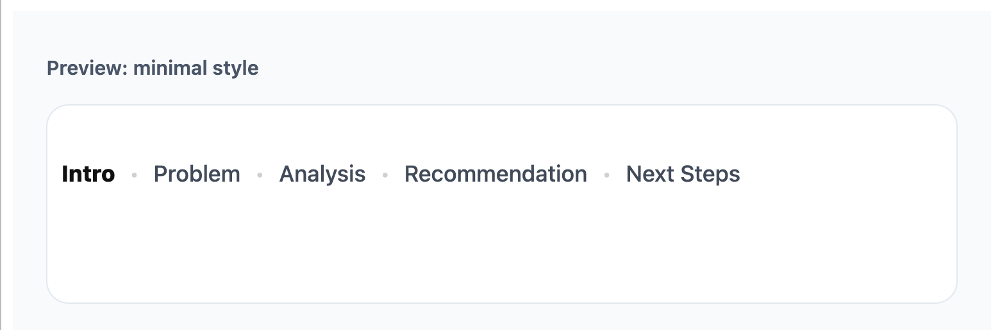
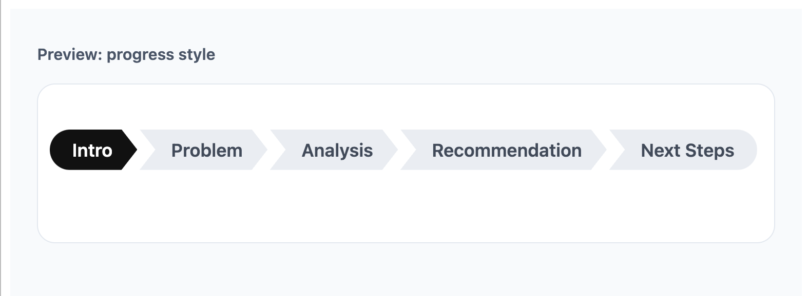
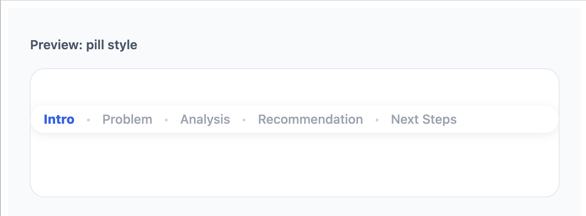
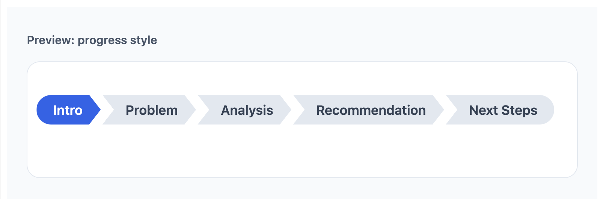

deckroadmap adds PowerPoint-style roadmap footers to Quarto and R Markdown Reveal.js slides.
It helps audiences see what has been covered, what section they are currently in, and what comes next. The package supports multiple built-in styles, including pill, minimal, and progress, along with options for colors, size, and positioning.

Read the background story and design notes in the blog post.Installation
# install.packages("pak")
pak::pak("CodingTigerTang/deckroadmap")Or with remotes:
remotes::install_github("CodingTigerTang/deckroadmap")Why use deckroadmap?
Many business, teaching, and conference presentations use a roadmap bar to help orient the audience during the talk. deckroadmap brings that pattern to Reveal.js slides in a simple R-friendly way.
With one function call, you can add a persistent footer that marks:
completed sections
the current section
upcoming sections
Supported formats
deckroadmap currently supports:
Quarto Revealjs presentations
R Markdown Revealjs presentations
It is designed for Reveal.js-based HTML slides.
Basic usage
Add use_roadmap() near the top of your document, then tag each slide with a section name using data-roadmap.
library(deckroadmap)
use_roadmap(
c("Intro", "Problem", "Analysis", "Recommendation", "Next Steps"),
style = "pill"
)Then use matching section labels on your slides, for example:
Full examples
Full working examples are included in the examples/ folder:
examples/quarto-demo.qmdexamples/rmarkdown-demo.Rmd
These show complete Reveal.js slide documents for Quarto and R Markdown.
Previewing styles
You can preview a roadmap style locally before rendering slides by using preview_roadmap().
preview_roadmap(
sections = c("Intro", "Problem", "Analysis", "Recommendation", "Next Steps"),
current = "Analysis",
style = "progress"
)Because this README renders to GitHub Markdown, the live HTML preview is not shown here. The screenshots below were generated locally from the preview function.
Styles
deckroadmap currently includes three styles.
style = "pill"
A rounded floating footer with a soft background.
use_roadmap(
c("Intro", "Problem", "Analysis", "Recommendation", "Next Steps"),
style = "pill"
)
style = "minimal"
A lighter text-only roadmap with less visual weight.
use_roadmap(
c("Intro", "Problem", "Analysis", "Recommendation", "Next Steps"),
style = "minimal"
)
style = "progress"
A connected progress-style roadmap with section blocks.
use_roadmap(
c("Intro", "Problem", "Analysis", "Recommendation", "Next Steps"),
style = "progress"
)
Customization
You can control font size, bottom spacing, text colors, and, for progress, background colors.
Text styling
use_roadmap(
c("Intro", "Problem", "Analysis", "Recommendation", "Next Steps"),
style = "pill",
font_size = "14px",
bottom = "12px",
active_color = "#2563eb",
done_color = "#374151",
todo_color = "#9ca3af"
)
Progress style with background colors
use_roadmap(
c("Intro", "Problem", "Analysis", "Recommendation", "Next Steps"),
style = "progress",
active_color = "#ffffff",
done_color = "#ffffff",
todo_color = "#334155",
active_bg_color = "#2563eb",
done_bg_color = "#475569",
todo_bg_color = "#e2e8f0"
)